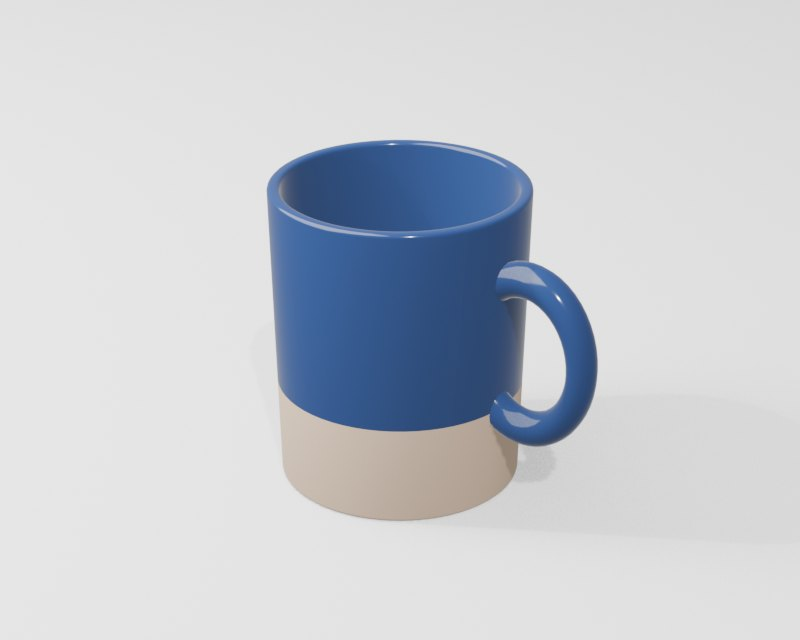
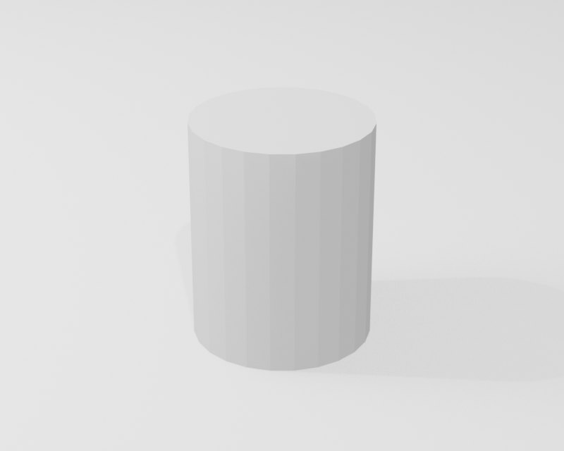
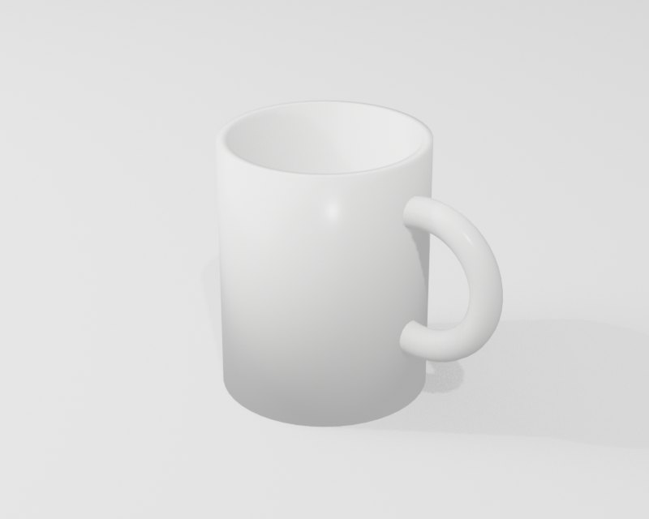

社内勉強会 ・ 約10分
Claude Code × Blender MCP で知る「AI駆動開発」のはじめかた
今日の話
質問に答えるだけでなく、道具を操作して物を作れる
同じAIでも、伝え方しだいで仕上がりがまるで違う
これからは、何を作るかを書く力が大事になる
しくみ
↺ AIは出来上がりの画像を自分で見て、おかしければ直す
AIがいろいろな道具（3Dソフト、表計算、社内システム…）を操作するための共通の決まり。コンセントの形が同じなら、どの家電も挿せるのと同じ。
Blenderの操作方法を知らなくても始められる。人がやるのは「何を作りたいか」を伝えることと、出来を確かめること。
3Dモデリング
「白いマグカップを作って。取っ手は右に」
形を作る・色をつける・照明とカメラを置く
「取っ手がめり込んでいる」→ 自分で直す
「もう少し濃い色に」「大きく写して」

この資料の画像は、すべて実際に Claude Code が Blender MCP で作ったもの。作る途中で「取っ手の内側がカップの中に突き出ている」「色が薄い」とAI自身が気づいて直している。
AI駆動開発
| これまで | AI駆動開発 | |
|---|---|---|
| 手を動かす | 人（操作・プログラムを覚える） | AI（操作もプログラムも書く） |
| 何を作るか決める | 人 | 人（ここが一番大事になる） |
| 出来を確かめる | 人 | 人 ＋ AI（AIもチェックするが、最後は人） |
| 速さ | 覚えるまで時間がかかる | 試作が数分。何度も作り直せる |
指示プロンプトによる違い


指示プロンプトによる違い
「いい感じにして」「ちゃんと作って」
→「いい感じ」の中身はAIに伝わらない
新しく入った同僚に頼むつもりで書く。
分からないことは「先に質問して」と添える
仕様駆動開発
# マグカップ 仕様 ## 目的 社内イベントの記念品の見本 ## 形 - 高さ 9.5cm / 口の直径 8cm - 縁の厚さ 4mm、縁は丸める - 取っ手は右、指2本が入る ## 見た目 - 上 2/3：藍色・つやあり - 下 1/3：素焼きの土色・つやなし ## 完成の基準 - 斜め上からの画像で寸法と色分けが分かる
これからの進め方
毎日の作業から1つ。文章の下書き、表の整理、簡単なツールなど
うまくいった指示はひな形にして、次から使い回す
「完成の基準」を先に決めておく。最後は必ず人が見る
仕様とひな形を共有すると、チーム全体の質がそろう
まとめ
身近な作業を1つ選び、目的・形や量・見た目・条件・完成の基準の5つを書いてAIに頼んでみる。
ひとことで頼んだ場合と、結果を比べてみる。